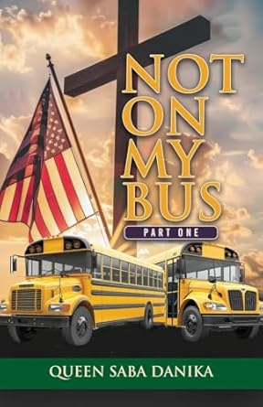

Not on My Bus
Not on My Bus is a memoir detailing Queen Saba Danika's
journey of faith, personal growth, and resilience. It explores her
transition from Catholicism to Christianity, challenges she faced,
and lessons she learned along the way. Are we living in Revelation?
I never in my wildest imagination thought I would be jailed for
loving God.
After coming to Christ and converting from Catholicism to
Christianity, the author's entire life changed! Based on a true
story. This book will demonstrate her love for God, His Glory, and
the many times His angels took charge over her as it is written and
saved her life. After experiencing many life altering tragedies, the
mystery of her birth was revealed. This book will demonstrate the
author's love for God, His promises when we seek Him and the
corruption that is attempting to take God's children in America and
around the world. Can you solve the mysteries?